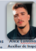
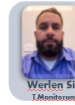
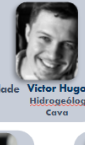
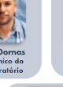
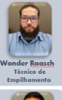
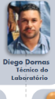

Rotina Diária & Controle Operacional de Campo
Cronograma Integrado PCM • Alertas Diários de Inspeção • Monitoramento Pluviométrico & Organograma Funcional
Ciclo 1 em execução. Frentes prioritárias designadas para Barragem B1, Barragem B4, Cava Jangada e PDE1. A coleta de pluviometria é obrigatória antes da validação dos Checklists e FIRs de campo.
Monitoramento Climatológico & Registro de Pluviometria
Solicitação vinculada à liberação de frentes e estabilidade de taludes
Radar IBIS-FM EVO & TARP Ativo
Operador de Telemetria: Werlen Henriques
Escala Operacional • Matriz de Atividades PCM
Rotina diária distribuída conforme o plano de contingência e monitoramento Itaminas
| Atividade • Ação Geotécnica | Estrutura Alvo | Responsável / Operador | Ciclo | Status Operacional | Ação de Campo |
|---|---|---|---|---|---|
|
sensors
Monitorar Instrumentação Geotécnica
Leitura de 14 Piezômetros Corda Vibrante
|
BARRAGEM B1 |
Maycon Douglas
Téc. Geotecnia
|
Ciclo 1 (Manhã) | Concluído | |
|
fact_check
Inspeção Visual Regular & Checklists
Inspeção de crista, bermas e drenagem superficial
|
BARRAGEM B4 |

Alex Luminatto
Aux. Inspeção
|
Ciclo 1 (Manhã) | Em Andamento (80%) | |
|
water_drop
Coleta Pluviométrica & Climatologia
Registro matinal das 4 estações de campo
|
TODAS AS ESTAÇÕES |
Nauberty Santos
Auxiliar PCM
|
Ciclo 1 (07h-08h) | Concluído (07:30h) | |
|
radar
Monitoramento Contínuo Radar IBIS-FM
Análise cinemática de taludes e deformações milimétricas
|
CAVA JANGADA |

Werlen Henriques
Téc. Monitoramento
|
Ciclo Contínuo 24/7 | Operando / Normal | |
|
flight_takeoff
Voo de Drone & Aerofotogrametria
Mapeamento de trincas na berma 4 e modelo digital de elevação
|
PDE1 / PILHA B2 |
Itamar Seixas (Neto)
Eng. Pilhas
|
Ciclo 2 (Tarde - 14:00) | Pendente / Programado | |
|
water
Aferição de Rebaixamento Freático
Conferência de poços tubulares profundos e vazões de bombeamento
|
CAVA JANGADA |

Victor Hugo
Hidrogeólogo Cava
|
Ciclo 2 (Tarde - 15:30) | Pendente / Programado |
Organograma & Hierarquia da Equipe de Geotecnia
Superintendência de Henrique Faria • Diretoria de André Machado. Mapeamento de papéis, atribuições do PCM e responsabilidades legais de campo.

Nível 1 • Liderança & Gestão Geral
Governança, PSB & Responsabilidade Técnica
Gestão estratégica de barragens, atendimento à ANM/FEAM, governança de riscos FMEA e aprovação de Planos de Segurança de Barragens (PSB).
Nível 2 • Corpo Técnico Analítico & Especialistas
Modelagem, Supervisão, DCE & Análise de EstabilidadeSupervisão direta das barragens B1 e B4, emissão de Declarações de Condição de Estabilidade (DCE) e validação técnica de relatórios mensais.
Modelagem numérica de estabilidade (Slope/W), monitoramento de pilhas de estéril (PDE1 e Mangaba) e análises de risco FMEA estrutural.
Modelagem hidrogeológica computacional, sistema de rebaixamento de nível d'água na Cava Jangada e análise de piezometria profunda.
Nível 3 • Execução Operacional de Campo & PCM
Inspeção de Campo, Leituras de Instrumentação, Telemetria e ControleFiscalização de campo, leitura de piezômetros manuais, inspeção de drenos e preenchimento de FIR.
Inspeção diária dos taludes da Cava Jangada, conferência de prismas topográficos e identificação de trincas.
Operação e calibração 24/7 do Radar Hexagon IBIS-FM EVO, envio de alertas de TARP e telemetria de sensores.
Alimentação do cronograma diário PCM, coleta e registro de pluviometria das 4 estações e apoio aos ensaios.

